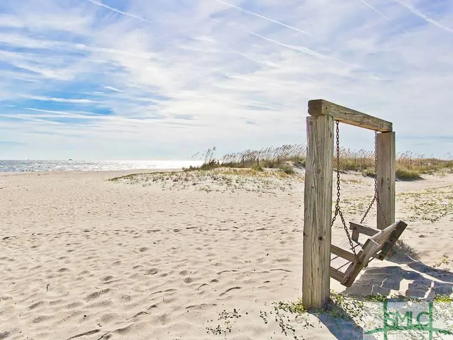

Photo pair 1


geometrically_supported
Shared-image context: SHARED IMAGE: shared-1472 appears in 11 Airbnb listings; possible generic imagery or related hosts, not property-specific evidence
Hash / geometric comparison evidence
{
"hash_hamming": {
"dhash": 3,
"phash": 0,
"center_phash": 0
},
"hash_min": 0,
"priority_policy": "obvious_v2_both_phashes_le_6_realtor_shared_excluded",
"exact_hash_hamming": {
"phash": 0,
"center_phash": 0
},
"orb_ransac": {
"score": 0.5181198501872659,
"detail": {
"inliers": 526,
"ratio_matches": 534,
"coverage": 0.35312275872600146,
"homography": [
[
0.9653510096761512,
0.002685594175951062,
-2.620901788233902
],
[
0.0012851735094487444,
0.9649137630578731,
-1.3289015727695757
],
[
3.7426679102548617e-06,
4.777839687526107e-06,
1.0
]
]
},
"comparison_ms": 19.538787004421465,
"feature_lookup_or_extraction_ms": 77.64524100639392
}
}